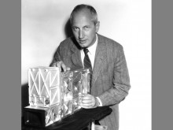

Please note: the AAS Obituaries are temporarily being hosted on this website while their full content is being ingested into the PubPub publishing platform newly adopted by the Bulletin of the American Astronomical Society. When the migration is complete, your existing links will take you to the final, migrated content. Contact peter.williams@aas.org with any questions.
Charles A. Barth (1930-2014)
Reprinted with permission from Eos.
Accomplished space researcher Charles A. Barth died at his home in Boulder, Colo., on 14 October 2014, at the age of 84. Charles directed the Laboratory for Atmospheric and Space Physics (LASP) of the University of Colorado Boulder (CU-Boulder) from 1965 to 1992. He was among the first researchers to recognize the importance of nitric oxide in the Earth’s upper atmosphere and its significance to ozone and water vapor. Numerous students he taught at CU-Boulder and others from the university community remember him as a devoted teacher and mentor.
Charles spent his childhood in Philadelphia and went on to study chemistry at Lehigh University, receiving his B.S. in 1951. After serving in the U.S. Air Force, Charles got a Ph.D. in 1958 from the University of California, Los Angeles. He was then awarded a National Science Foundation postdoctoral fellowship to conduct research at the University of Bonn in Germany, from 1958 to 1959. Returning to the United States, Charles worked as a research physicist for the next 6 years in NASA’s Jet Propulsion Laboratory (JPL) at the California Institute of Technology in Pasadena.
30 Years Leading LASP
When Charles was named director of LASP in 1965, he and his wife, Louise, who met each other in Los Angeles during Charles’s graduate studies, moved their family to Boulder. Charles’s steadfast and innovative leadership at LASP would span nearly 3 decades. Even after retiring, he remained a committed ambassador for LASP and maintained a humble presence in the laboratory hallways.
Charles’s focus on planetary atmospheres included Earth’s middle and upper atmosphere. Of 140 papers Charles published, approximately one-quarter addressed nitric oxide, including his last paper published in 2010. Many of his doctoral students continue similar studies today.
Principal Investigator on NASA Missions
Charles played a leading role in the development of spaceborne ultraviolet spectrometers, small spacecraft platforms, and planetary exploration systems. Under his guidance, LASP science instruments journeyed to every planet in the solar system. Charles served as the principal investigator for experiments on 16 NASA missions and flew dozens of new instruments on 59 sounding rocket (suborbital) flights. These missions included Mariners 5, 6, 7, and 9; Orbiting Geophysical Observatories 2, 4, 5, and 6; Atmosphere Explorer C and D; Apollo 17, Pioneer Venus, Solar Mesosphere Explorer (SME), Galileo, Cassini, and Student Nitric Oxide Explorer (SNOE).
With the SME and SNOE missions, Charles demonstrated how to effectively develop and manage research missions. The Solar Mesosphere Explorer team operated a NASA mission entirely from a university for the first time, and LASP’s tradition of conducting missions with a combination of professional staff and students still thrives today. Charles built many Ebert-Fastie grating spectrometers, such as the Mariner 6 spectrometer he holds in the photo.
Charles participated extensively in helping guide the space research community. He served on NASA’s Space and Earth Science Advisory Committee (1982–1985) and the NASA Advisory Council’s Solar System Exploration Committee (1980–1987).
Awards and honors he received include the American Geophysical Union Nicolet Lecture (1999), JPL’s Distinguished Visiting Scientist appointment (1995), the NASA Distinguished Public Service Medal (1983), the NASA Exceptional Scientific Achievement Medal (1972), and the University of Colorado Robert L. Stearns Award (1970).
Inspiring the Next Generation
In addition to his long and productive research career, Charles left a lasting legacy through his teaching and mentoring. He began teaching in 1965 at CU-Boulder as an associate professor. In 1967, he advanced to full professor of astrophysical and planetary sciences. In 2002, he became professor emeritus.
Charles generously shared his knowledge and passion, inspiring both colleagues and students while developing the next generation of space science researchers to carry forward the work. He served as the primary adviser for nearly two dozen doctoral students at CU-Boulder. In addition, he inspired countless undergraduates studying science and engineering. Through his commitment to hands-on education and training, Charles involved many students in his space research and NASA missions. Today, students still receive hands-on experience designing and operating spacecraft at LASP.
Charles’s passion for teaching extended beyond the university campus. He volunteered with the Boy Scouts of America for many years. He shared his love of the majestic Colorado Rocky Mountains through camping and hiking with the Scouts and with his family. His children fondly recall family projects—fueled by their dad’s love of science and technology—that included building televisions, radios, and garage door openers.
In 2013, CU-Boulder established the Charles A. Barth Scholarship in Space Research. The university awarded the first Barth scholarship to CU-Boulder student Wren Suess, shortly before Charles’s death.
Charles’s wife of 60 years, Louise, and four children survive him. We will miss seeing Charles in the halls of LASP and discussing the latest research discoveries with him. His achievements in space research will be forever etched in NASA’s and LASP’s history.
Obituary written by: Daniel N. Baker, Thomas N. Woods
Additional links:
- http://connections.cu.edu/people/in-memoriam-charles-a-barth/
- https://eos.org/articles/charles-a-barth-1930-2014
BAAS Citation: BAAS, 2014, 46, 016